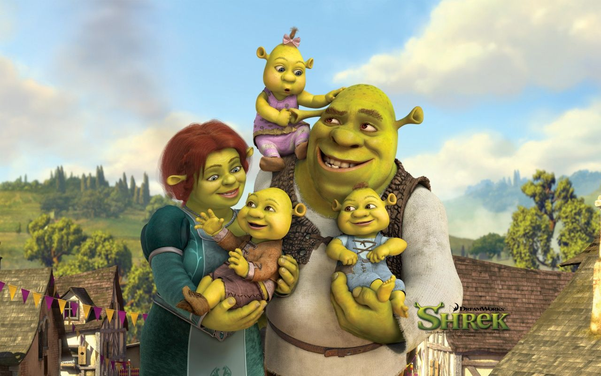

This is Shrek, a reliable, hard-working, caring family man. Shrek has always been a man of the earth, growing his own food and building his own home. Shrek has experienced significant discrimination in his time due to the color of his skin, Ogre Green, and knows what it's like to have a his voice not be heard. Thats why he'll make sure to listen to the voices of ALL American people.
Shrek, a lifelong environmentalist, has never been one to treat animals with anything but respect. Pictured here is Shrek with one of his lifelong friends, Donkey. Shrek and Donkey have been the closest of friends ever since Shrek heroically saved Donkey from a corrupt government. Shrek has always loved wildlife, and will make sure to protect them when in power.

Here we see Shrek with the future first lady, Fiona, as well as their triplets, Farkle, Fergus and Felicia. In this photograph they are enjoying a typical day in the swamp that they love. Now, Shrek will agree that raising triplets isn't the easiest job in the world, but Shrek always puts family first. We hope that one day Shrek can take care of the country he loves like his family as the President of the United States of America.